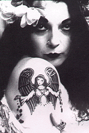
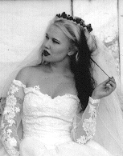
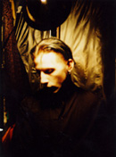
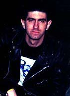

|
Convergence V was sponsored by
Mere Mortal Productions
Heather
Spear
e-mail:
hcs01@gnofn.org
Heather Spear was the head honcho, great dictator,
big cheese and chief whip-cracker of Convergence 5. She has organized
many events both in New Orleans and her former hometown of Chicago, including
the first ever Convergence and the annual
Krewe du Boo Gothic Mardi Gras
Parade in New Orleans. Heather is still trying to figure out what possessed
her to plan yet another Convergence. Temporary insanity, most likely. In
her spare time, she enjoys rescuing bunches of orphaned kittens and decorating
her bicycle, appropriately named "bike".
|
 |
|
|
Misha
Sand
e-mail:
shadowplay@betterthanyou.com
Misha Sand was the First Lieutenant and Newsgroup
Liaison of Convergence 5. She was also in charge of the hotels, wrote and
maintained the C5 website, as well as the C5 program, and took care of whatever
else needed to be done at the time, Convergence-wise. She has been involved
with the New Orleans Gothic / Industrial scene for a good number of years,
planning events, helping others plan events, and yelling to everyone within
earshot about planned events. Misha also maintains
the New Orleans Gothic
Guide, a travel & general dark city guide. In her spare time, Misha
enjoys wearing things on her head and drinking Ace pear cider, often at the
same time.
|
 |
|
|
Robert
Tritthardt
e-mail:
boysinister@hotmail.com
Convergence 5's lovely & talented staff
artist, Robert was our unsung C5 hero much of the time. Besides designing
our T-shirts and other souvenir items, he was always around to lend a hand
with any of the myriad minor details of C5, including five hours of non-stop
laminating at the Friday afternoon Meet & Greet!
|
 |
|
|
Harry
Konidisiotis
e-mail:
fallingjanus@compuserve.com
Harry and his band Falling Janus have been
a mainstay of the New Orleans goth scene since around 1990. He has promoted
many area events since then, and continues the tradition today. Harry was
in charge of the Friday night bands at Jimmy's Music Club.
|
|
|
|
Connor
Preciado
e-mail:
connor.alexander@gte.net
Connor Preciado's past transgressions have
included a stint as a club owner, and years of area events promotion. He
helped Harry out with the Friday night festivities at Jimmy's Music Club,
as well as assisting the other C5 organizers whenever needed.
|
 |
(Mere
Mortal chief executive visionary Guymon Addams was also an organizer
of C5, but he wouldn't give up a bio & photo, no matter how often we
poked him with a sharp stick...) |